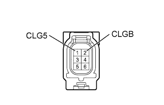

DTC B27A8 Обрыв в цепи антенны электронного ключа снаружи багажного отделения |
| Код DTC | Условие обнаружения DTC | Неисправный участок |
| B27A8 | Обнаружен обрыв в цепи между ЭБУ сертификации и антенной электронного ключа (снаружи багажного отделения) (CLG8 - CLG5, CG8B - CLGB). |
|
| 1.ПРОВЕРЬТЕ РАЗЪЕМ СОЕДИНЕНИЕ |
Выключите зажигание.
Проверьте правильность подключения разъемов к ЭБУ сертификации и антенне электронного ключа (снаружи багажного отделения).
|
| ||||
| OK | |
| 2.ПРОВЕРЬТЕ ЖГУТ ПРОВОДОВ И РАЗЪЕМ (АНТЕННА ЭЛЕКТРОННОГО КЛЮЧА - ЭБУ СЕРТИФИКАЦИИ) |
Отсоедините разъем R16 антенны.
Отсоедините разъем G39 ЭБУ.
Измерьте сопротивление в соответствии со значениями, приведенными в таблице ниже.
| Контакты для подключения диагностического прибора | Условие | Заданные условия |
| R16-1 (CLG5) - G39-19 (CLG8) | Всегда | Менее 1 Ом |
| R16-2 (CLGB) - G39-20 (CG8B) | Всегда | Менее 1 Ом |
| G39-19 (CLG8) - масса | Всегда | 10 кОм или более |
| G39-20 (CG8B) - масса | Всегда | 10 кОм или более |
|
| ||||
| OK | |
| 3.ПРОВЕРЬТЕ АНТЕННУ ЭЛЕКТРОННОГО КЛЮЧА (СНАРУЖИ БАГАЖНОГО ОТДЕЛЕНИЯ) |
|  |
Снимите наружную антенну электронного ключа (снаружи багажного отделения) (Нажмите здесь).
Измерьте сопротивление в соответствии со значениями, приведенными в таблице ниже.
| Контакты для подключения диагностического прибора | Условие | Заданные условия |
| 1 (CLG5) - 2 (CLGB) | Всегда | Менее 1 Ом |
|
| ||||
| OK | |
| 4.ЗАМЕНИТЕ ЭБУ СЕРТИФИКАЦИИ |
Временно замените ЭБУ сертификации новым блоком (см. бюллетень технического обслуживания).
| ДАЛЕЕ | |
| 5.ПРОВЕРЬТЕ DTC |
Сбросьте коды DTC (Нажмите здесь).
Проверьте коды DTC (Нажмите здесь).
|
| ||||
| OK | ||
| ||